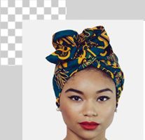

-
Caleb Pope
Grassroots activist who believes that we all can do something. Using hashtag slogans to inspire a movement that he started after he posted a video calling on men to stop acting like everything is fine when it comes to gender violence. The theater and performance student at the University of Chicago addressed harmful male behavior he had witnessed on his social media. His truth gained him many views and interactions from women who were grateful that he was a man speaking out.
-

Yvonne Habiba
In the autobiographical book 'Masaibu Yetu', Habiba shares her collected stories of rape, prostitution, and human trafficking. Her narration brought to light the endured years of nightmare rooted in prostitution, drug addiction, and poverty. She helps us see that when you know and you see men that are rapists, that have killed women or committed gender-based violence on the streets, still in the township, still in the tavern, still in the clubs, especially the high-profile officials that are using women for sexual exploitation and after that just silence them. She helps us understand the challenges of speaking out.
-
Ruth Odumbe
She is fighting against sexual abuse, other forms of violence against women and girls, child marriage, and gender discrimination. She is involved in many projects, including “Tutimize Ahadi,” which addresses gender-based violence and violence against children and embodies the commitments by governments, the UN, and other bodies to achieve the 2030 Agenda for Sustainable Development.
-

Diana Migan
Dee is a youth development expert and does this through YouthHubAfrica, a nonprofit organization that aims to support young people in Africa involved in social change. In his capacity as a youth development leader, he has also consulted for many local and international agencies, including the World Bank, UNFPA, and the African Union Youth Division.
-
Stern Madega
He works in his capacity for the engagement of key civil society organizations to collect and disseminate data, contributing to access to information. And, working with key decision-makers on best practices for media engagement. His approach supports an enabling environment where objective media can thrive and the public can have their voices heard.
-
Mushie Mushie
Mushie, is known for her activism against GBV. Mushie is a singer, presenter, and actress from Nairobi, Kenya. Mushie believes that knowledge is integral and that using platforms such as hers to share information about GBV goes a long way in reaching those who may otherwise not have had access to crucial information.
- What
- When
- Free Ticket Signup